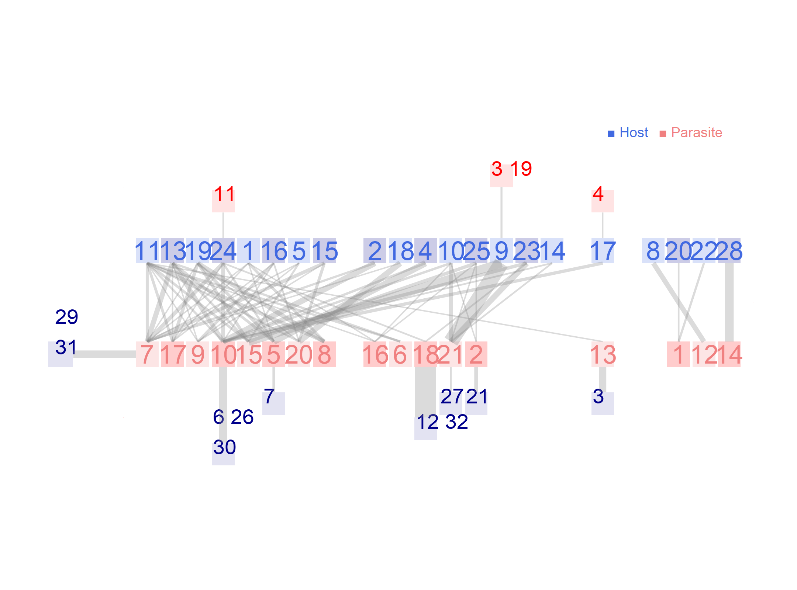

Network: RA_HP_042

Host 1 Amalaraeus penicilliger, 2 Amphipsylla anceps, 3 Amphipsylla dumalis, 4 Amphipsylla primaris, 5 Amphipsylla rossica, 6 Amphipsylla schelkovnikovi, 7 Callopsylla caspia, 8 Ceratophyllus sciurorum, 9 Citellophilus ullus, 10 Ctenophthalmus arvalis, 11 Ctenophthalmus assimilis, 12 Ctenophthalmus dilatatus, 13 Frontopsylla elata, 14 Frontopsylla elatoides, 15 Frontopsylla ornata, 16 Hystrichopsylla talpae, 17 Leptopsylla nana, 18 Leptopsylla sicistae, 19 Megabothris rectangulatus, 20 Mesopsylla eucta, 21 Mesopsylla hebes, 22 Mesopsylla lenis, 23 Neopsylla democratica, 24 Neopsylla mana, 25 Neopsylla setosa, 26 Nosopsyllus consimilis, 27 Oropsylla ilovaiskii, 28 Oropsylla silantiewi, 29 Paraneopsylla ioffi, 30 Pectinoctenus lauta, 31 Pectinoctenus nemorosa, 32Rhadinopsylla ioffi
Parasite
1 Allactaga elater, 2 Allactaga major, 3 Allocricetulus eversmanni, 4 Alticola argentatus, 5 Alticola strelzowi, 6 Apodemus agrarius, 7 Apodemus uralensis, 8 Arvicola terrestris, 9 Clethrionomys rufocanus, 10 Cricetulus migratorius, 11 Cricetus cricetus, 12 Dryomys nitedula, 13 Ellobius talpinus, 14 Marmota baibacina, 15 Microtus arvalis, 16 Microtus gregalis, 17 Microtus oeconomus, 18 Myospalax myospalax, 19 Sicista subtilis, 20 Sicista tianshanica, 21Spermophilus erythrogenys
Hadfield JD, Krasnov BR, Poulin R, Shinichi N (2013) A tale of two phylogenies: comparative analyses of ecological interactions. The American Naturalist 183(2): 174-187 Tarbagatai